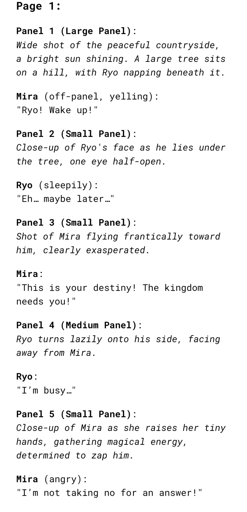
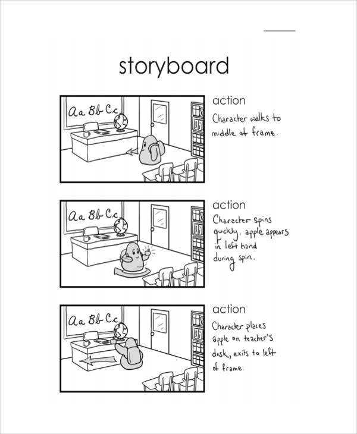
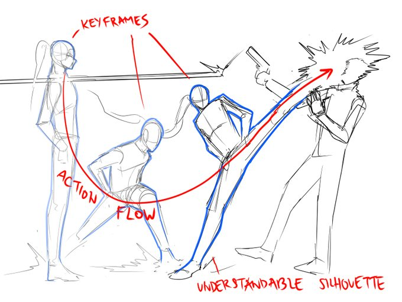
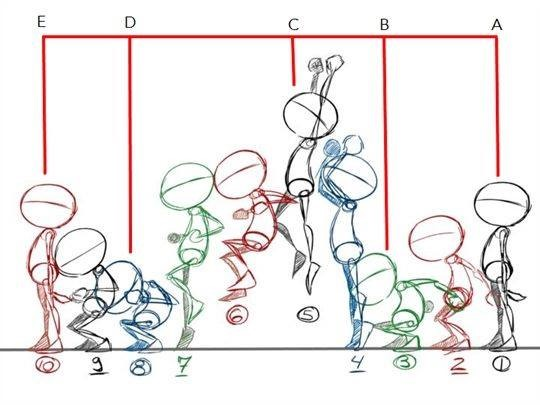
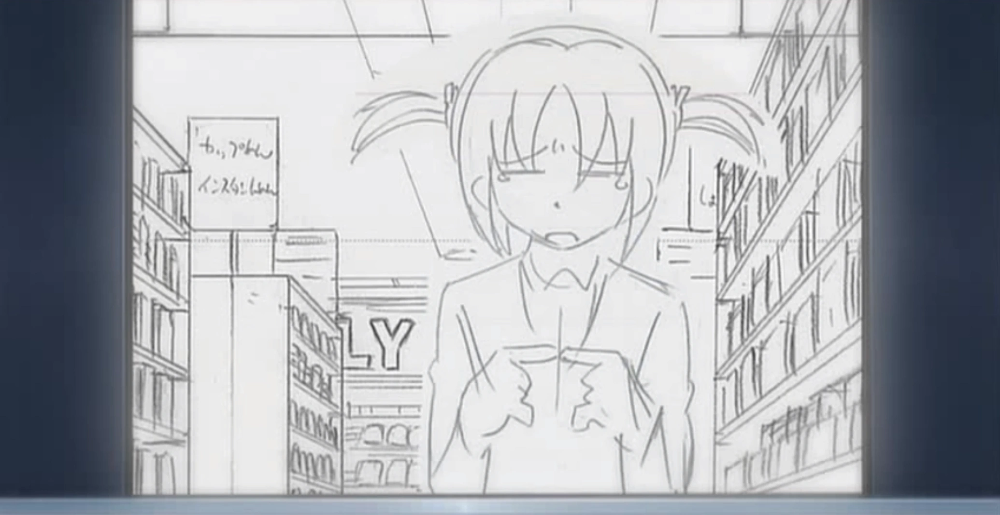

Stages of creation
Pre-Production
- Script
- Storyboard
- Character Design



Production
- Key frames
- Transition Animation
- Layout
- 2D/3D Animation



Post-Production
- Colorization
- Dubbing
- Sound effects and songs
- Edition